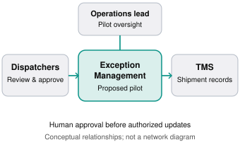
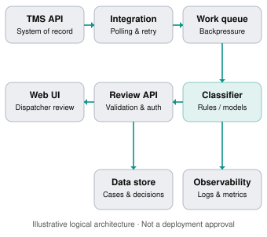
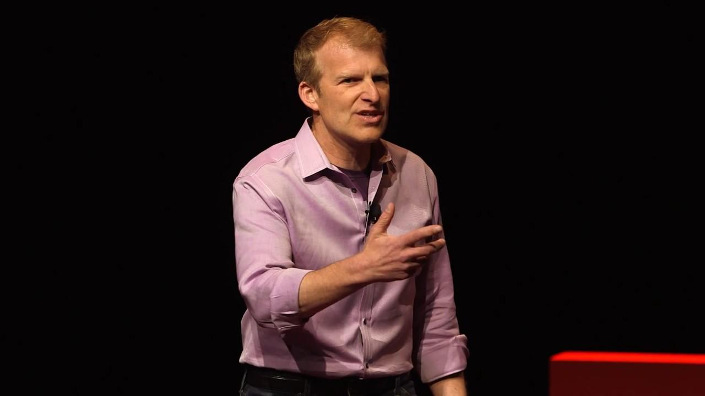

Intermediate–Advanced
100–120 min
Solution proposals
Chapter overview
You've spent several weeks working with Northstar Logistics.
You conducted discovery calls, interviewed dispatchers, investigated the transportation management system, defined requirements, and negotiated the pilot scope.
The COO now asks:
"This all sounds promising. Send me a proposal I can take to our leadership team. I need to understand what we're building, why it will work, how much effort it requires, and what could go wrong."
You have a proposed architecture, an engineering backlog, and several pages of technical notes.
But none of those is automatically a customer-ready proposal.
A strong technical proposal connects a customer's business problem to a feasible solution, explains the important trade-offs, and provides enough evidence for the customer to make an informed decision.
An FDE's proposal is not simply an architecture document. It's a decision-making document supported by engineering.
This chapter builds a complete fictional enterprise proposal and shows how to present it to executives, engineers, and operational stakeholders.
Learning objectives
By the end of this chapter, learners should be able to:
Structure a persuasive, technically credible customer proposal.
Translate discovery findings into a problem statement and recommended solution.
Create architecture diagrams at appropriate levels of detail.
Explain alternatives and justify technical decisions.
Build realistic implementation plans, estimates, assumptions, and dependencies.
Define measurable pilot acceptance criteria.
Present proposals to technical and executive audiences.
Handle challenging questions without overpromising.
Produce a proposal that can support an authorized delivery decision.
11.1 What makes a technical proposal effective?
A technical proposal must answer six fundamental questions.
01
Why?
What customer problem are we solving, and why does it matter?
02
What?
What capabilities and outcomes are being proposed?
03
How?
What architecture and implementation approach will deliver them?
04
When?
What milestones, dependencies, and decision gates govern delivery?
05
What could go wrong?
What risks, assumptions, and trade-offs need attention?
06
How will we know?
What evidence will demonstrate that the solution works and creates value?
A proposal that answers only how may be an excellent technical design but a poor business proposal.
A proposal that answers only why may be persuasive but insufficient for delivery.
An FDE needs both.
Proposal vs. design document vs. statement of work
Artifact | Main purpose | Primary audience |
|---|---|---|
Technical proposal | Recommend a solution and enable a decision | Customer sponsors and technical leaders |
Technical design document | Explain detailed implementation choices | Engineers and architects |
Statement of work (SOW) | Define formal commercial and delivery obligations | Authorized business, legal, and delivery owners |
Implementation plan | Organize execution and dependencies | Delivery team and customer owners |
Executive presentation | Communicate the recommendation and secure alignment | Decision-makers |
These artifacts may overlap, especially at smaller companies. However, a proposal should not be presented as a binding commercial agreement unless it has passed the appropriate approval process.
11.2 The anatomy of an enterprise technical proposal
A practical proposal can be organized into ten sections.
Section | Purpose |
|---|---|
1. Executive summary | State the problem, recommendation, and decision needed |
2. Business context | Establish the workflow and impact |
3. Objectives and success metrics | Define measurable outcomes |
4. Proposed solution | Describe capabilities and user experience |
5. Architecture | Show components, data flows, and boundaries |
6. Alternatives and trade-offs | Explain why the approach was selected |
7. Scope and exclusions | Prevent mismatched expectations |
8. Implementation plan | Describe phases, milestones, and owners |
9. Risks and assumptions | Surface uncertainty and dependencies |
10. Acceptance and next steps | Define evidence and required approvals |
Not every proposal needs to be long. A two-week proof of concept may need only a few pages, while a regulated enterprise deployment may require substantial supporting material.
The standard is decision sufficiency, not document length.
11.3 Running case study — Northstar Logistics
We'll use the fictional customer from earlier chapters.
CUSTOMER PROFILE · FICTIONAL
Northstar Logistics
Enterprise transportation and shipment operations
5,000
Shipments/day
300–500
Estimated exceptions/day
6 weeks
Requested pilot window
Current workflow
Dispatchers review shipment exceptions through a transportation management system (TMS), spreadsheets, and manual communication.
An exception may involve a missing scan, delayed pickup, or inconsistent delivery status.
The process creates several possible sources of friction: fragmented information, repeated investigation, inconsistent categorization, and manual handoffs.
The customer wants to reduce exception handling effort while retaining dispatcher approval over customer-facing status changes.
The proposed pilot
An exception management application that retrieves eligible shipment records, categorizes exceptions, displays supporting evidence, and allows dispatchers to review and approve actions.
The pilot will not autonomously modify shipment statuses or send customer notifications.
That boundary is important because it keeps the proposed solution aligned with the previously discussed scope.
11.4 Example: A customer-ready executive summary
The executive summary is often the most important section of the proposal.
It should be understandable without reading the technical appendix.
NORTHSTAR LOGISTICS
PROPOSAL V0.1 · DRAFT
Shipment Exception Management Pilot
Executive summary · Illustrative proposal
Business challenge
Northstar Logistics processes approximately 5,000 shipments daily and estimates 300–500 exceptions. Dispatchers investigate these exceptions using multiple systems and manual workflows. The current handling-time baseline has not yet been validated.
Our recommendation
Implement a six-week, human-supervised pilot that retrieves eligible shipment exceptions, categorizes them, presents supporting shipment information, and enables dispatcher review before any approved status update.
Expected value
The pilot aims to reduce manual investigation effort, improve consistency, and establish measurable evidence of operational value. Actual time savings will be measured against a verified baseline.
Delivery approach
Begin with API and workflow validation, develop a limited end-to-end implementation, test representative exception cases, and run a controlled pilot with designated dispatchers.
Primary risks
Undocumented API rate limits, inconsistent source data, integration availability, and delayed access or security approvals.
Decision requested
Approve the proposed pilot scope and discovery dependencies, assign customer-side technical and operational owners, and authorize the next validation milestone. Production rollout remains subject to separate readiness and governance decisions.
Why this executive summary works
It starts with the customer problem, not the technology stack.
It explains the proposed solution in business language, distinguishes intended value from proven results, and makes the immediate decision clear.
It also avoids claiming that the pilot will achieve a particular ROI before the baseline and operational data have been verified.
A useful test is to ask:
Could the COO explain the recommendation, its risks, and the decision needed after reading only this section?
If not, revise the summary.
11.5 Designing architecture diagrams that communicate
Architecture diagrams are not decoration. They help people reason about system boundaries, data movement, ownership, and risk.
The C4 model organizes diagrams into levels such as system context, containers, components, and code, allowing different audiences to explore the same system at different depths.
Level 1 — Executive system context
Northstar Logistics — System context

Executive audience: What systems and people are involved? Where does human accountability remain?This diagram deliberately omits databases, queues, programming languages, and deployment details.
It shows the operational boundary that matters most to leadership.
Level 2 — Technical architecture
Proposed container-level architecture

Technical audience: How does data move? Which services own processing, review, persistence, and operational monitoring?Questions the technical diagram must answer
The diagram is a starting point, not a complete design.
Engineering reviewers should still ask how the TMS authenticates requests, whether polling is permitted, how rate limits are enforced, what happens when a message is retried, how duplicate actions are prevented, and how authorized decisions are written back.
They should also examine data classification, retention, secrets management, failure recovery, and deployment ownership.
AWS's Well-Architected Framework provides a useful review structure across operational excellence, security, reliability, performance, cost, and sustainability.
Interactive architecture review
Architecture readiness checklist
11.6 Comparing solutions before making a recommendation
A proposal should explain why a particular approach is appropriate, not merely describe the preferred technology.
For Northstar Logistics, consider three options.
Option | Benefits | Limitations |
|---|---|---|
A. Improve existing TMS workflows | Lower integration complexity; may be faster | Limited by existing platform capabilities |
B. Build a rules-based exception workbench | Explainable classifications; controlled workflows | Requires rule maintenance and custom UI |
C. Build an AI-assisted exception workbench | May handle less structured cases | Requires evaluation, monitoring, and additional safeguards |
The recommendation should depend on evidence.
For the initial pilot, Option B is a reasonable starting hypothesis because the identified exception types—missing scans, delayed pickups, and inconsistent statuses—may be classifiable using explicit business rules.
If discovery uncovers complex unstructured notes or other cases that rules cannot handle effectively, Option C can be evaluated against the same success criteria.
This is an important FDE principle: the best proposal may use less sophisticated technology than the customer initially requested.
Interactive solution selection
Architecture decision explorer
Rules-based workbench
Potential advantage: Provides transparent classifications and human-reviewed actions.
Key risk: Rules may become difficult to maintain if exception categories are highly variable.
Evidence needed: Test representative exceptions, integration behavior, and dispatcher usability.
11.7 Building a realistic implementation plan
A timeline should communicate dependencies and decision gates, not merely dates.
Example six-week pilot plan
Illustrative delivery schedule
Weeks 1–6
W1
W2
W3
W4
W5
W6
Validate API & baseline
Architecture & access
Build core workflow
Integrate & test
User acceptance
Pilot evaluation
Milestones and exit criteria
Milestone | Evidence required | Decision |
|---|---|---|
Discovery validated | Baseline, exception categories, owners | Confirm pilot requirements |
Technical feasibility | API access and representative integration tests | Proceed with build |
End-to-end staging | Functional workflow and failure handling | Begin user acceptance |
User acceptance | Dispatcher testing and resolved critical issues | Authorize pilot evaluation |
Pilot evaluation | Measured results and documented limitations | Decide next phase |
A date is not enough. Each milestone needs evidence that the next phase can proceed responsibly.
Estimating costs and effort
A proposal may need to distinguish engineering effort, customer staffing, infrastructure costs, third-party licensing, ongoing operations, and support.
Avoid false precision.
For example, a cost estimate should identify assumptions about request volume, hosting, storage, logging, data transfer, and support expectations. If API limits or workload patterns are unknown, present scenarios or a range rather than inventing a fixed number.
The estimate should also clarify which costs are included, excluded, or subject to separate commercial approval.
11.8 Defining measurable pilot success
A proposal should specify how success will be evaluated before implementation begins.
Proposed pilot scorecard
Metric | Baseline | Proposed acceptance approach |
|---|---|---|
Handling time | Not yet measured | Compare representative cases against agreed baseline |
Classification quality | Not yet measured | Evaluate against independently labeled exceptions |
Dispatcher adoption | Not yet measured | Measure actual use during pilot |
Unauthorized changes | Zero permitted | Verify authorization controls |
API failure handling | Not yet measured | Run retry, duplicate, and failure tests |
User satisfaction | Not yet measured | Structured dispatcher feedback |
For a time-savings metric, define what counts as the start and end of handling, whether waiting time is included, which exception categories qualify, and how unusual cases are treated.
For classification quality, determine whether accuracy, precision, recall, or another metric best reflects the business consequences of errors.
A successful pilot is not merely one that demonstrates working software. It provides credible evidence about business value, usability, operational suitability, and remaining risks.
11.9 Risk register and decision log
Every credible proposal should acknowledge material uncertainty.
Risk | Impact | Mitigation | Owner |
|---|---|---|---|
TMS API rate limits unknown | Backlog or integration failure | Capacity test and throttling design | Customer integration lead + FDE |
Inconsistent shipment data | Incorrect classification | Data profiling and exception handling | Operations + engineering |
Security approval delay | Pilot access blocked | Early architecture and access review | Customer security owner |
Dispatcher adoption is low | Benefits not realized | Workflow testing and training | Operations lead |
Scope expands mid-pilot | Schedule and quality risk | Change-control process | Sponsor + delivery lead |
Ownership must be confirmed rather than assigned unilaterally.
Distinguish risks from assumptions
A risk is a possible event or condition that could affect delivery.
An assumption is something the plan currently treats as true but has not necessarily verified.
For example:
Assumption: The TMS provides an API suitable for retrieving eligible exceptions.
Risk: The API may impose rate limits that prevent the proposed processing throughput.
Dependency: The customer must provide approved API access.
Decision: Whether to proceed with the integration after feasibility testing.
This distinction makes the proposal easier to act upon.
11.10 Presenting the proposal to executives
A written proposal and a live presentation serve different purposes.
The document supports careful review. The presentation should help the audience understand the recommendation and make a decision.
A useful executive presentation contains approximately six to eight slides.
Executive presentation walkthrough
Slide 1 of 7
NORTHSTAR LOGISTICS / PILOT PROPOSAL
The business problem
Why change is needed
Exception handling relies on fragmented manual workflows. Establish the current baseline and quantify the operational burden.
Executive presentation walkthrough
Slide 2 of 7
NORTHSTAR LOGISTICS / PILOT PROPOSAL
What success looks like
The outcome
Reduce eligible exception handling effort while preserving dispatcher oversight and reliable status information.
Executive presentation walkthrough
Slide 3 of 7
NORTHSTAR LOGISTICS / PILOT PROPOSAL
Recommended solution
The proposal
A rules-based exception workbench that retrieves cases, presents evidence, and supports human-reviewed actions.
Executive presentation walkthrough
Slide 4 of 7
NORTHSTAR LOGISTICS / PILOT PROPOSAL
How it works
Architecture
Connect the TMS, controlled processing, review interface, and authorized write-back. Highlight security and operational boundaries.
Executive presentation walkthrough
Slide 5 of 7
NORTHSTAR LOGISTICS / PILOT PROPOSAL
Delivery plan
Milestones
Validate feasibility, build the core workflow, test integrations, conduct user acceptance, and measure pilot results.
Executive presentation walkthrough
Slide 6 of 7
NORTHSTAR LOGISTICS / PILOT PROPOSAL
Risks and trade-offs
What could change
API limits, source-data quality, approvals, and adoption may affect delivery. Present mitigations and decision gates.
Executive presentation walkthrough
Slide 7 of 7
NORTHSTAR LOGISTICS / PILOT PROPOSAL
Decision requested
The next step
Approve the proposed scope, assign customer owners, authorize feasibility work, and agree on the pilot evaluation process.
Start again
How to deliver the presentation
Start with the decision the audience needs to make, then explain the customer problem and your recommendation.
Avoid spending the first ten minutes introducing every service in the architecture.
When presenting trade-offs, explain why the recommended approach is appropriate for the customer's needs and what evidence could change the recommendation.
Finish by asking for a concrete decision and confirming the next steps.
Handling challenging executive questions
"Why can't we automate everything immediately?"
Because the current pilot is designed to validate exception handling and controlled review. Autonomous actions introduce additional operational and approval risks. We can evaluate broader automation after measuring pilot performance and confirming governance requirements.
"What ROI can you guarantee?"
We can't responsibly guarantee ROI before validating the baseline and measuring actual pilot performance. The proposal defines how we'll collect that evidence and make the next investment decision.
"Why not just use AI?"
AI may be useful for complex or unstructured cases. The initial exception categories appear suitable for explicit rules, which are easier to evaluate and explain. We can compare an AI approach against that baseline if the data justifies it.
"Can we launch production in six weeks?"
The proposed six-week plan is a controlled pilot, not an unconditional production launch. Production readiness depends on technical validation, security approvals, operational support, and customer acceptance.
11.11 Verified learning resources
These resources come from the original authors or publishers.

WATCH · PRESENTATION SKILLS
Think Fast. Talk Smart — Matt Abrahams
TEDx Talks · 2015
Learn to structure spontaneous answers and communicate clearly when an executive challenges your proposal.
WATCH & READ · ARCHITECTURE DIAGRAMS
Official C4 website
Includes the architecture diagramming method and a recorded presentation. Focus on how system context and container diagrams serve different audiences.
READ · PROPOSAL WRITING
How to Write a Project ProposalSource link needs rechecking. See the resource directory for details.Updated publisher resource ↗
Atlassian
Covers executive summaries, business context, solutions, deliverables, timelines, and resources. Use it to evaluate the structure of your own proposal.
READ · TECHNICAL DESIGN REVIEW
AWS Well-Architected Framework
Amazon Web Services
Use its six pillars to identify architecture questions that your proposal must address, even if the eventual deployment is not on AWS.
Learning assignment
Study the C4 model's system context and container diagrams. Then draw both levels for a familiar application.
Present the context diagram to a fictional COO in 60 seconds and the container diagram to a fictional engineering lead in three minutes.
Your explanation should change with the audience, but the underlying architecture must remain consistent.
11.12 Interactive exercise — Build your executive summary
Exercise 11.1: Proposal opening
20–25 min
Write a concise executive summary for Northstar Logistics. It should contain the business problem, recommended solution, expected value, pilot scope, major risks, and decision requested.
Auto-saved on this device. Review your answer for customer impact, evidence, assumptions, ownership, and a clear next step.
Review checklist
Does the first paragraph explain the customer's problem? Does the recommendation clearly describe the pilot? Are benefits expressed as goals rather than guaranteed results? Are exclusions and dependencies visible? Is the decision requested explicit?
11.13 Capstone workshop — Create a technical proposal
Exercise 11.2: Enterprise solution proposal
35–45 min
Scenario: Meridian Bank
The bank wants a six-week proof of concept for document extraction and discrepancy review.
Its operations director wants measurable time savings. Engineering requires integration with an internal loan API. Security requires approved data processing and an auditable review process.
You have not yet validated representative document quality, model performance, API behavior, or the final pilot acceptance thresholds.
Prepare a proposal containing an executive summary, solution overview, architecture, implementation milestones, alternatives, assumptions, risks, scope exclusions, and approval request.
Auto-saved on this device. Review your answer for customer impact, evidence, assumptions, ownership, and a clear next step.
Evaluation rubric — 100 points
Dimension | Points |
|---|---|
Business understanding and outcome | 20 |
Architecture and technical feasibility | 20 |
Scope and delivery planning | 20 |
Risks, assumptions, and controls | 15 |
Acceptance criteria and measurement | 15 |
Executive clarity and decision request | 10 |
11.14 Presentation role-play — Defend your recommendation
Live proposal defense
Challenge 1 of 4
COO
"Why are we paying for custom development instead of using our existing platform?"
Auto-saved on this device. Review your answer for customer impact, evidence, assumptions, ownership, and a clear next step.
Compare the existing platform's verified capabilities with the proposed requirements. Avoid assuming the custom approach is automatically superior.
Live proposal defense
Challenge 2 of 4
ENGINEERING DIRECTOR
"What happens if the TMS API fails halfway through processing?"
Auto-saved on this device. Review your answer for customer impact, evidence, assumptions, ownership, and a clear next step.
Live proposal defense
Challenge 3 of 4
CFO
"What evidence justifies investing in a wider rollout?"
Auto-saved on this device. Review your answer for customer impact, evidence, assumptions, ownership, and a clear next step.
Live proposal defense
Challenge 4 of 4
SECURITY LEAD
"What prevents unauthorized shipment updates?"
Auto-saved on this device. Review your answer for customer impact, evidence, assumptions, ownership, and a clear next step.
11.15 Interactive knowledge quiz
11.16 Chapter summary
A strong technical proposal turns discovery, requirements, and engineering judgment into a recommendation the customer can evaluate and authorize.
The essential lessons:
Start with the business problem. Architecture should support the desired customer outcome.
Write for decisions. Explain the recommendation, alternatives, risks, and next steps.
Use layered diagrams. Show executives the system context and engineers the technical boundaries.
Justify technology choices. Sophistication is not a substitute for suitability.
Plan around evidence. Milestones need acceptance criteria, dependencies, and decision gates.
Separate targets from guarantees. Unverified assumptions must remain visible.
Present with clarity. A successful presentation ends with alignment and an actionable decision.
The central principle: A great FDE doesn't just propose a system that can be built. They propose a solution the customer can understand, evaluate, and confidently decide whether to pursue.
MODULE 02 COMPLETE
Customer Discovery & Communication
You've now covered discovery calls, requirements engineering, stakeholder communication, expectation management, and technical proposals.
UP NEXT · MODULE 03 / CHAPTER 12
System Design for Customer-Facing Engineers
We'll explore enterprise architecture, reliability, scalability, security boundaries, build-versus-buy decisions, and the practical differences between designing a reusable product and designing a customer-specific deployment.
The chapter will include architecture challenges, realistic enterprise scenarios, verified resources, hands-on design exercises, and an interactive knowledge quiz.
Field notes
Capture the idea you will use in your next customer conversation.